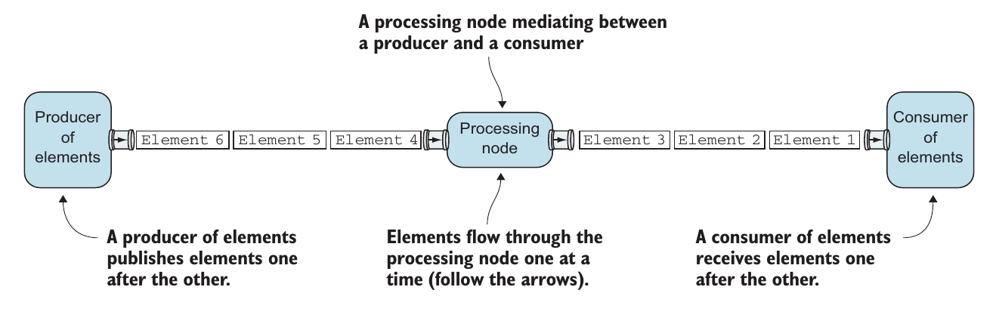

Я решил написать статью про akka-streams, и про то как я разбираюсь с новыми вещами, я считаю что людям будет интересно как я это делаю. По той причине что я достаточно долго все понимаю и усваиваю, а таких как я много. Я уже имею средний бэкграунд по работе с акторами, надеюсь вы тоже.
И так начну. Прежде чем ты начинаешь что то изучать у тебя обычно имеется очень тупое представление о том что будешь изучать. Так вот, начну как раз с этого, akka-streams это штука которая упрощает работу с потоком данных, для начала входных. В голову сразу приходит пример с вебсокетом в который постоянно что то приходит, и он должен это обработать(пачкой которая может поместиться в память, можно назвать это buffer) и вернуть обратно то же что либо. Мое представление заключается в том что akka-streams предлогает интересный подход в работе с такого рода вещами, либо обстракция очень простая и умная, или и то и другое. В ходе написания статьи я постоянно обращаюсь к различным источникам, что бы узнавать что то новое, начал я с замечательной книги Akka in Action. потому что это самое современное и объемное по Akka из всего что я нашел в интернете, на момент написания статьи, да и плюс уже купил.
Начнем с простых вещей. Наверное если мы обрабатываем какой то поток данных есть что то, что воспроизводит их, например человек вводит данные, или другая программа пишет что то в лог или же какой то контроллер пишет байты куда то. И есть что то что потребляет эти данные уже в нужном ему виде. Например контроллер пишет байты в файл, сокет или еще куда то, а клиентскому приложению данные нужны уже обработаные и в виде json. Окей, то что создает данные называется Producer, то что потребляет данные называется Consumer. Между Producer-ом и Consumer-ом есть нечто, что обрабатывает данные и переводит в нужный вид или отбрасывает будем называть это Processing node. Это отлично показано в изображении:  Хм, что мне показалось реально крутым и интересным так это то что в akka-streams Consumer, должен сигнализировать Producer-у сколько он может обрабоать, что бы предотвратить перегрузку. А Producer в свою очередь должен слать ровно столько элементов, сколько запрашивает наш Consumer. И все элементы должны проходить через Processing Node, который делает обработку. Круто. Интересно. Свежо. Дальше автор утверждает что все это очень напоминает акторы. И действительно есть что то. Но вот дело в том что логику общения между Consumer-ом и Producer-ом, где Consumer говорит Producer-у слать ли ему еще, или он занять придется реализовывать самостоятельно. Логично. Давайте попробуем.